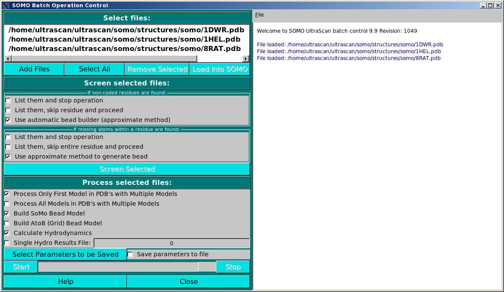

| |
Manual |

This module has been devised to allow the unattended processing of several files, from the generation of the bead models or of multiple atomic-level conformations via a Discrete Molecular Dynamics (DMD) module, to the computation of several parameters (hydrodynamic, SAXS/SANS).

The operations begin by loading the files in the module via the Add Files button. Several files can be loaded at the same time from the same directory location. Files can be of both kinds supported by US-SOMO, PDB structures or bead models. If unwanted files have been inadvertently loaded, or they are found later to be not suitable for processing (see below), they can be removed from the list by clicking on them and pressing the Remove Selected button. Once the list is completed, a single file can be selected by clicking on it, and multiple files can be selected by clicking on them while holding the shift key. Select All will obviously select all files. The Load into SOMO and Load into SAXS buttons are active when exactly one file is selected and will load the file respectively into the SOMO main window or the SAXS/SANS main window.

In order to allow for the unattended operations, the files must be checked for compliance with the US-SOMO requirements.
In particular, their residues must be defined in the somo.residue lookup table and must contain all atoms. Alternatively,
the parsing options can be set so to cope with these eventualities, by either skipping the incompleted/not coded residues, or by the
use of approximate methods (a detailed description of these options can be found here).
For bead models, they must match the overlap tolerance as set in the Hydrodynamic Computations Options
module.
The uploaded files are therefore screened for compliance with the settings shown in the Screen selected files: panel, by
pressing the Screen Selected button. The progress window on the right side reports the progress of the operations,
and list the problems that might be found with the files, prompting for corrective action to be taken.

The sequence of batch operation is then set in the Process selected files: panel:
The alternative Process Only First Model in PDBs with Multiple Models and the Process All Models in PDBs with Multiple Models clickboxes control if just the first or all models should be processed in PDB files containing multiple models, like those derived from NMR studies. These options are active only if at least a PDB file is among the selected files.
The Run DMD checkbox will enable Discrete Molecular Dynamics (DMD) runs to be carried on the selected files according to the DMD settings (see here).
The alternative Build SoMo Bead Model and Build AtoB (Grid) Bead Model dictate which bead modeling
procedure will be used to generate the models. These options are active only if at least a PDB file is among the selected files.
Next comes a series of checkboxes relating to SAXS (and in the future SANS) computations (be sure to check the SAXS options currently selected using the Saxs Options button at the bottom of this panel before launching the computations):
Compute SAXS I(q) will allow the computation of the scattering intensity I(q) vs the momentum transfer q curves for each model (see here).
I(q) search is an advanced feature that will allow varying the Buffer electron density, the Scaling excluded volume, and SWH (explicit hydration water molecules) excluded volume in a combined, stepwise manner until a best fit with an experimental curve is found. (see here). IMPORTANT: This selection operates only on local machine computations! For performing an I(q) search on a cluster resource, use the Advanced options feature under the Cluster module.
Compute SAXS P(r) will allow the computation of the distance distribution function P(r) vs r for each model (see here).
Hydrate will add explicit water molecules to the PDB file according to our statistical hydration scheme (see here). This step is required if the computation of the I(q) vs. q is then performed with our Debye method, but not for other methods like Crysol (unless they are run with no hydration).
Combined SAXS Results File allows the generation of a single csv-formatted file containing all the computed data. A filename should be entered in the field provided.
Create Individual Saxs Results File will also produce individual computed SAXS results files.
Compute I(q) average curves and Compute I(q) std deviation curves become active only if the Combined SAXS Results File checkbox is enabled, and will append to the csv-formatted file extra line(s) containing average and standard deviation values calculated for all the I(q) curves.
Compute P(r) average curves and Compute P(r) std deviation curves become active only if the Combined SAXS Results File checkbox is enabled, and will append to the csv-formatted file extra line(s) containing average and standard deviation values calculated for all the P(r) curves.
The Calculate Hydrodynamics checkbox enables the computation of the hydrodynamic parameters after the bead model
building phase is completed.
Selecting the Combined Hydro Results File: checkbox will produce a single results' file, with at the end the
averages of all parameters, instead of separate files for each model uploaded or generated. A filename for the single results'
file must be provided in the dedicated space. Otherwise, each file will be named using the general US-SOMO rules and the
prefixes present in the main program panel.
A subset of parameters can be saved in another file in a comma-separated format by selecting the Save parameters to file
checkbox. The parameters to be saved can be selected from the dedicated module (see here) accessed
by pressing the Select Parameters to be Saved button.

When all the preliminary operations have been completed, the batch operation on your computer can be launched by pressing the Start button, and the progress will be reported in the progress bar and in the right-side progress window. Operations can be aborted at any time by pressing the Stop button.
For more demanding computations (and for all the DMD computations), the operations can be transferred to high-end, (super)computing centers using the Cluster button. The Saxs Options button will instead open the Saxs Options panel.
This document is part of the UltraScan Software Documentation
distribution.
Copyright © notice.
The latest version of this document can always be found at:
http://www.ultrascan.uthscsa.edu
Last modified on March 14, 2012.